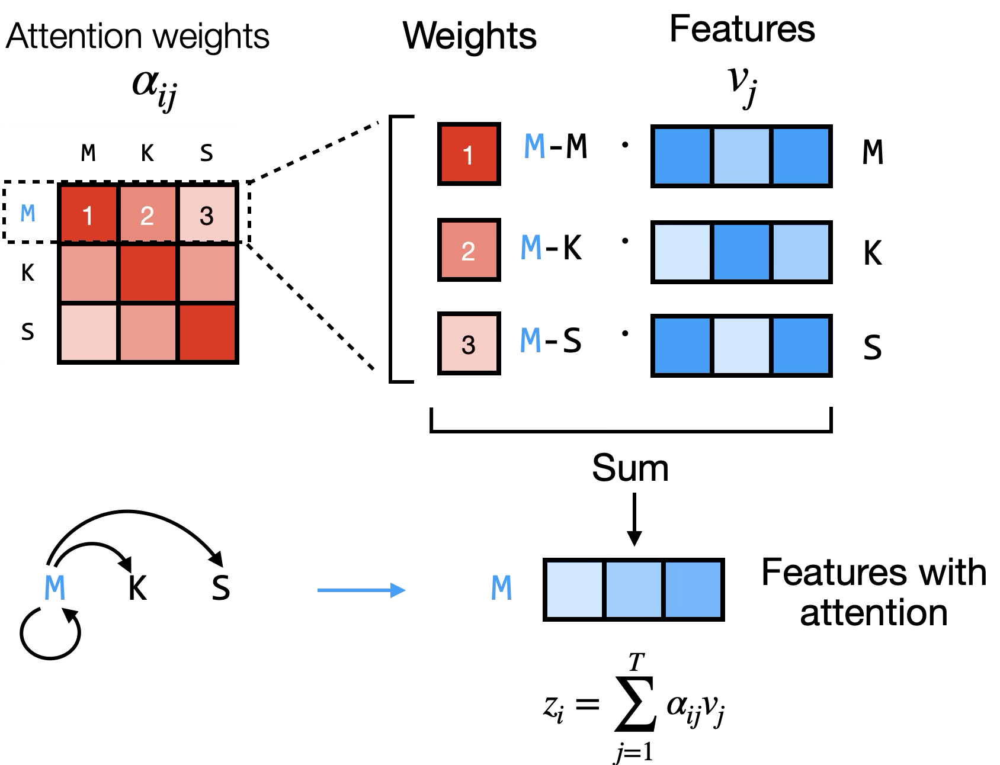
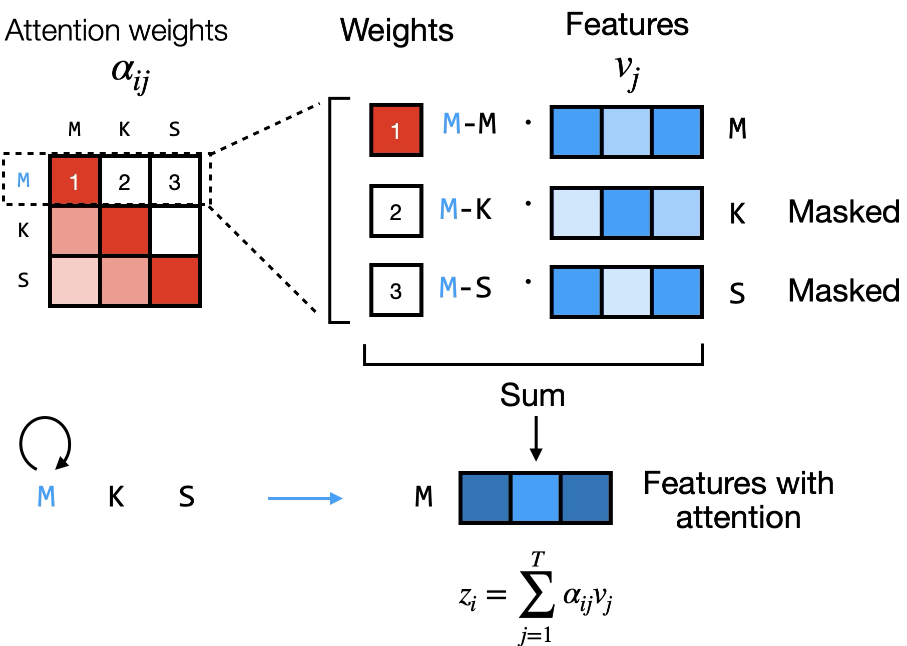

Slot 84 · one sentence, tokens entering · mock
Your three points: one example (the lesson's sentence, no Sentence select, no Replace toggle); tokens enter a press at a time and the weights update; arcs on the sentence as your output figure draws them (a loop for self, arcs to the other tokens), for one query word, aspirin to start — click a word to choose another. The two pages are drawn side by side here, each 550 wide, and driven by the same buttons. Block 1, the mean of the four heads, computed live from the draft's models.


1 · Encoder and Decoder, driven together
A press: the next token glides in from the right; then the weights are computed. In the encoder an outline steps down every row and each one's weights change, because every row now has one more key to share its weight with (the bar at its right is how far that token's final vector moved on this press, after both blocks). In the decoder the earlier rows cannot see the new token, so only the new row is computed and the others' bars read 0.00. The chosen word's arcs thin in the encoder as later words arrive, and stay as they were in the decoder.
2 · To answer with the mock open
1 · The softmax. The generation section's next-token probabilities (the model's output softmax) are left out here: the token entering is the whole of it, and your diagram's loop says the output is fed back. Recommended: leave them out.
2 · The query's arcs. One chosen word, aspirin first, a click on a word to choose (drawn) · or the newest token's arcs, moving with each press (but in the encoder the newest token has nothing after it yet, so its arcs never reach forward).
3 · The bars beside each row: how far that token's final vector moved on this press (drawn; 1.5–14.9 for every earlier encoder row on every press, 0 in the decoder) · or none, the outline sweeping the rows alone. Block 1's weights alone are not the measure: aspirin's row moves 0.001 when [SEP] enters, which would read as the decoder's zero.
4 · The Encoder–decoder page simplified the same way: one gene, no Gene select, no Keys: One vector toggle (the 10-2 point stays a note for the lesson), and arcs from the newest amino acid down to the nucleotides it reads.